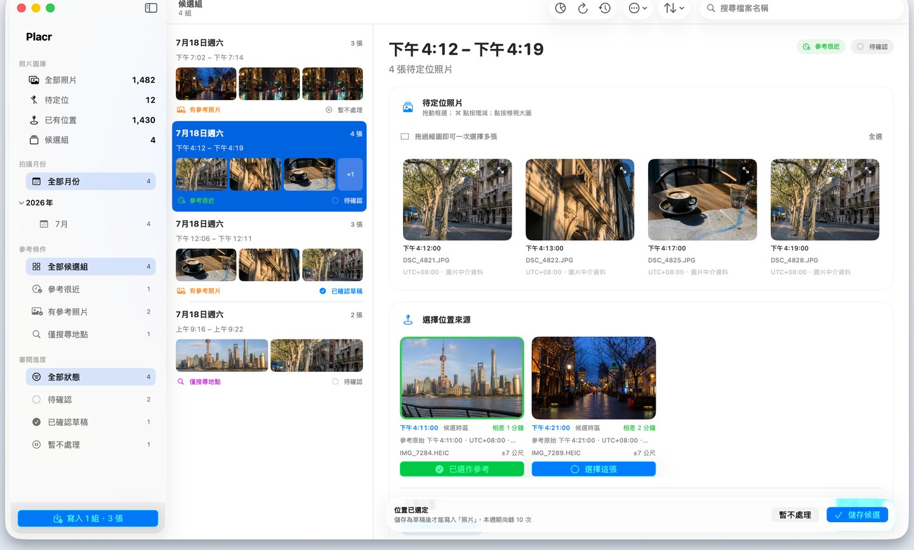
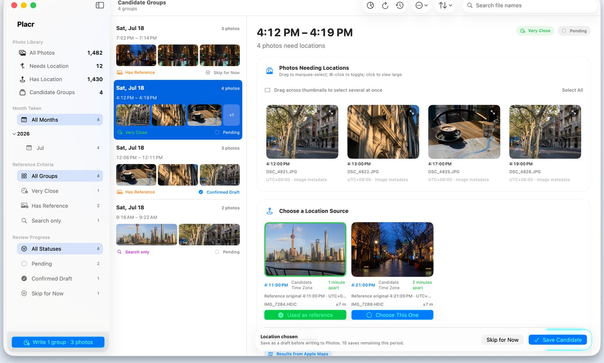

给照片补上缺失的地点
Placr 按月份扫描你的照片图库，把缺少位置的照片按拍摄时间分组，参考同一时段有位置的照片给出建议，并在你确认后批量写入。
- 按月份看 只处理缺少位置的照片，按拍摄时间分成候选组。
- 就近取证 用同一时段已有位置的照片推断地点，也可以自己搜索。
- 确认后才写 每次写入都留有操作记录，随时可以恢复原来的位置。
照片始终留在你的 Mac 上，开发者收不到任何内容。
為照片補上缺少的地點
Placr 會逐月掃描你的照片圖庫，依拍攝時間將缺少位置資訊的照片分組，參考同一時段已有位置的照片提出建議，並在你確認後批次寫入。

- 逐月檢視 只處理缺少位置的照片，依拍攝時間分成候選群組。
- 就近取證 以同一時段已有位置的照片推斷地點，也可以自行搜尋。
- 確認後才寫入 每次寫入都留有操作記錄，隨時可以還原成原本的位置。
照片會一直留在你的 Mac 上，開發者收不到任何內容。
為相片補上缺少的地點
Placr 會逐月掃描你的相片圖庫，按拍攝時間將缺少位置的相片分組，參考同一時段已有位置的相片提供建議，並在你確認後批次寫入。
- 逐月檢視 只處理缺少位置的相片，按拍攝時間分成候選組。
- 就近取證 用同一時段已有位置的相片推斷地點，亦可以自行搜尋。
- 確認後先寫入 每次寫入都留有操作記錄，隨時可以還原成原本的位置。
相片會一直留在你的 Mac 上，開發者收不到任何內容。
写真に足りない場所を戻す
Placr は写真ライブラリを月ごとに調べ、位置情報のない写真を撮影時刻でまとめます。同じ時間帯に撮られた位置情報付きの写真を手がかりに場所を提案し、確認後にまとめて書き込みます。
- 月ごとに確認 位置情報のない写真だけを、撮影時刻でグループにまとめます。
- 近くの写真から推定 同じ時間帯の位置情報付きの写真から場所を提案します。自分で検索することもできます。
- 確認してから書き込み 書き込みごとに操作記録が残り、いつでも元の位置に戻せます。
写真が Mac の外へ出ることはなく、開発者が受け取ることもありません。
Give photos their missing place
Placr scans your photo library one month at a time, groups photos missing a location by capture time, and suggests a place using nearby photos that already have one. Nothing is written until you confirm.

- One month at a time Only photos without a location, grouped by when they were taken.
- Borrowed from nearby photos Photos taken around the same time that already have a location suggest the place. You can also search for one.
- Written only after you confirm Every write leaves a record, so the previous location can be restored.
Your photos stay on your Mac. The developer receives nothing.